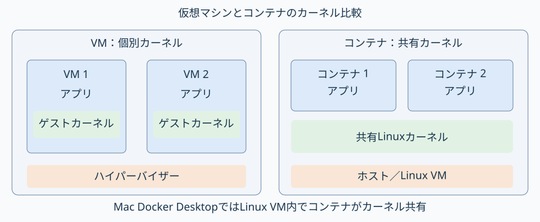

第19講 OSの役割・カーネル・ユーザー空間
1. 目的と資料
第3編OSの最初の講義。到達目標はOSとカーネルの区別、ユーザー空間とカーネル空間、システムコール、ドライバ、障害時の調査範囲、コンテナとVMの違いを説明できること。A必須：OS・カーネル・システムコール。B補助：権限・ログ・ドライバ。C発展：仮想化。参照：Linux man-pages syscall(2) https://man7.org/linux/man-pages/man2/syscall.2.html （呼び出し・返り値・errnoを原文確認）、proc_pid_status(5) https://man7.org/linux/man-pages/man5/proc_pid_status.5.html （State・Pid・VmRSS等を原文確認）、Linux Kernel Documentation Syscall User Dispatch https://www.kernel.org/doc/html/latest/admin-guide/syscall-user-dispatch.html （特殊機能の背景・注意を原文確認）。一般原理と架空例を区別し、製品固有仕様は未照合。
2. OSはなぜ必要か
CPUは命令を実行、メモリは作業データを保持、SSDは永続保存、NICは通信する。だがアプリごとにCPU配分・メモリ保護・ファイル管理を独自実装すると、安全な同時利用が困難。OS（Operating System、基本ソフトウェア）はハードウェア資源を管理し、アプリへ共通の利用方法を提供する。例：Nginxが通信を受け、FastAPIが処理し、PostgreSQLが保存する。CPU実行順、メモリ隔離、ディスク・ネットワーク入出力はOSが調整する。一方、注文が有効かどうかの業務判断はアプリが担当する。
3. OS・カーネル・ユーザー空間
カーネル（kernel）はOSの中核で、CPUスケジューリング、メモリ、ファイルI/O、プロセス、デバイスを管理する。OS全体にはカーネルに加え管理コマンド、ライブラリ、サービスなども含まれる。Linuxは文脈によりカーネルまたはLinuxを使うOS全体を指す。ユーザー空間はNginx、PostgreSQL、シェル等が動く領域。カーネル空間はカーネルが資源管理を行う領域。

図は上からアプリ、システムコール境界、カーネル、CPU・RAM・SSD・NIC。矢印は機能の依頼と結果の往復を示す。アプリがハードウェアを無制限に直接操作する意味ではない。
4. ユーザーモードとカーネルモード
CPUには実行権限の違うモードがある。通常アプリはユーザーモードで動き、保護されたメモリや機器を勝手に操作できない。カーネルはカーネルモードで特権命令や資源管理を実行する。これはログインユーザーがrootかどうかと別の概念。rootとして起動した通常アプリも通常はユーザーモードで動き、必要時にシステムコールを使う。空間は主にメモリ・実行環境の境界、モードはCPU権限の境界を示す。
5. 正常処理：設定ファイルを読む
①FastAPIが設定ファイルを開きたいと要求。②Python等のライブラリが必要に応じopenatなどのシステムコールを使う。③CPUがカーネル側の処理へ移り、カーネルがファイルの存在・権限・キャッシュを確認。④必要ならファイルシステムとドライバを通じSSDにI/Oを要求。⑤結果またはエラーをアプリへ返す。⑥アプリが設定内容を解釈する。

図の左右はユーザー空間とカーネル空間。右向きは要求、左向きは結果。システムコールはカーネル機能への正式な入口であり、通常の関数呼び出しは必ずしもカーネルへ移らない。LinuxのCライブラリでは失敗時に-1とerrnoを使う関数があるが、戻り値は各APIの仕様で確認する。
6. API・ライブラリ・システムコール
API（Application Programming Interface）は機能を利用する約束の総称。ライブラリは便利な関数の集まりで、複数のシステムコールを使ったり、システムコールなしで処理したりする。システムコールはカーネルに依頼する境界。Pythonのopen()は言語APIで、Linuxのopenat()そのものではない。ブラウザが呼ぶHTTPの/api/ordersはWeb APIであり、システムコールと別階層。文字列の連結などはユーザー空間だけで完結できる。
7. OSが管理するもの
| 対象 | OSの役割 | 障害の例 |
|---|---|---|
| CPU | 処理の実行順を調整 | 実行待ち・遅延 |
| メモリ | 仮想メモリを管理・保護 | スワップ・OOM |
| ストレージ | ファイルシステムとI/Oを管理 | 読書き失敗・I/O待ち |
| ネットワーク | ソケット・TCP/IP通信を扱う | 接続失敗・パケット損失 |
| プロセス | 起動・終了・状態を管理 | サービス停止 |
| 権限 | ファイルや操作の可否を判定 | Permission denied |
仮想メモリはプロセスごとに独立したアドレス空間を見せる仕組みで、物理RAMそのものではない。ファイルシステムはファイル名と保存データを対応づける仕組み。ソケットはアプリが通信を利用するOSの窓口。OOMはメモリ不足によりプロセスが終了させられる事象。
8. デバイスドライバ
デバイスドライバは特定の機器をOSから操作できるようにするソフトウェア。カーネルからの読み書き要求をNICやSSDに合った操作へ橋渡しする。Linuxでは多くのドライバがカーネル内で動くが、すべてのOSで同じ構造とは限らない。NICドライバの異常でリンクが上がらないならアプリのHTTP設定を直しても復旧しない。一方NICが正常でAPが待受していないならアプリ・サービス設定を優先する。
9. 権限と保護
ユーザー空間とカーネル空間の分離はアプリがOS全体を壊しにくくする基本構造。ただしユーザー空間だから必ず安全というわけではなく、アプリ脆弱性やカーネル脆弱性はあり得る。ファイルのPermission deniedはOSがアクセスを拒否したことを示す。所有者、パーミッション、ACL（追加のアクセス制御規則）、SELinux等の影響を確認する。調査せずchmod 777で全員に権限を与えるのは避け、必要最小限の権限にする。root権限とカーネルモードを混同しない。
10. 起動処理とのつながり
第15講からの連続性：①UEFIが起動対象を選ぶ。②ブートローダがLinuxカーネル等を読み込む。③カーネルがCPU・メモリ・デバイスを初期化し、ルートファイルシステムを利用可能にする。④PID1（多くのLinuxではsystemd）がサービスを起動。⑤NginxやDBが起動し業務開始。UEFIがSSDを認識しない問題と、OS起動後にPostgreSQLサービスが失敗する問題は調査層が異なる。systemctlは通常systemd稼働後に使うため、UEFI段階の故障は調べられない。
11. 障害例A：APだけ停止
架空事例：FastAPIプロセスが停止し、Nginxが502を返す。DBは正常。まずAPのサービス状態、待受ポート、アプリ例外ログ、OOM終了を調べる。
nginx: upstream connect() failed (111: Connection refused)
fastapi.service: Main process exited, status=1/FAILURE
1行目は上流接続先が接続拒否したこと、2行目はサービス主プロセスが失敗終了したことを示す架空ログ。これだけではアプリコード、ポート設定、メモリ不足のどれが原因かは確定できない。カーネル全体の障害とも限らない。
12. 障害例B：ドライバ側異常
架空事例：サーバ全体の通信が切れ、NICのリセットが繰り返し記録される。
kernel: eth0: transmit queue timed out
kernel: eth0: resetting adapter
送信キューのタイムアウトとアダプタのリセットを示す架空ログ。物理リンク、スイッチ、NIC統計、ドライバ・ファームウェア版、OSログを同時刻で確認する。resetだけでNICの物理故障とは断定しない。カーネルパニックはカーネルが回復困難な異常で停止する状態で、サーバ全体に影響し得る。
13. Linuxコマンドの読み方
Linuxかつsystemd採用環境を想定した読み取り例。未実行。
uname -r
cat /etc/os-release
ps -ef | head
cat /proc/1/status
systemctl status nginx --no-pager
journalctl -k -n 30 --no-pager
ls -l /etc/passwd
uname -rは稼働カーネルのリリース、/etc/os-releaseはOS配布版、psはプロセス一覧、/proc/1/statusはPID1の状態、systemctlはサービス状態、journalctl -kはカーネルログ、ls -lはファイル権限を確認する。/procはカーネルが情報を見せる仮想ファイルシステム。systemd非採用環境ではsystemctlは使えない。コンテナ内のPID1はホストのPID1と異なることがある。
14. /proc/PID/statusの読解
Name: postgres
State: S (sleeping)
Pid: 3142
PPid: 1
VmRSS: 204800 kB
Threads: 5
架空出力。Nameは名前、Stateは状態、Pidはプロセス識別番号、PPidは親の番号、VmRSSは物理メモリ上に存在する領域の概算、Threadsはスレッド数。StateのSは待機中で、即異常ではない。D（割り込み不可の待機）が長く続く場合はI/O待ちなどを調べる。RSSは共有メモリの扱いに注意し、複数プロセスを単純合計して物理RAM使用量と同一視しない。
15. 障害の責任境界と設計
| 症状 | 優先して確認 | 補助確認 |
|---|---|---|
| APIだけ502 | APプロセス・待受 | Nginx・通信経路 |
| Permission denied | OS権限・ACL・SELinux | 実行ユーザー |
| 全通信が停止 | NIC・ドライバ・スイッチ | ルーティング |
| カーネルパニック | カーネル・ドライバ・機器 | 更新履歴 |
| DBが遅くCPUは低い | DB待機・I/O・メモリ | SQL・バックアップ |
最初の調査先は症状で決めるが原因は複数層にまたがる。ログの時刻をそろえ、変更履歴を確認し、変更前に影響範囲・切戻し条件を決める。
16. VMとコンテナ
VM（仮想マシン）は仮想ハードウェア上でゲストOSのカーネルを起動する。コンテナは通常、ホスト側Linuxカーネルを共有し、名前空間（見えるプロセスやネットワークの範囲を分ける仕組み）やcgroups（CPU・メモリ等の使用量を管理・制限する仕組み）で分離する。

図の左はVMごとにゲストカーネルがある。右はコンテナ間でLinuxカーネルを共有。MacのDocker DesktopはLinux VMを介してコンテナを動かすため、LinuxコンテナがmacOSカーネルを直接共有するわけではない。
17. Oracle・JP1・Citrixへの対応
Oracle DBのプロセスはOSのCPU配分・メモリ・I/Oの影響を受ける。SQL待機とOSのI/O待ちを突き合わせる。JP1/AJSのジョブ実行はOSのプロセス起動・終了・実行ユーザー・環境変数に依存する。Citrixなどの仮想デスクトップ基盤ではゲストOS・ホストハイパーバイザー・仮想デバイスの責任範囲を分ける。これらは一般的な運用観点であり製品の版別仕様は未照合。
18. 自宅3層ラボへの応用
MacのDockerでNginx→FastAPI→PostgreSQLを分離しても、同じDocker DesktopのLinux VMカーネルを共有する。コンテナ別にプロセスが見えても独立したゲストカーネルを持つわけではない。安全な読み取り例（未実行）：
docker compose ps
docker compose logs --tail=30
docker stats --no-stream
psはコンテナ状態、logsはサービスログ、statsは資源使用量の目安。データを消すdocker compose down -vのような操作は演習に含めない。
19. 要点と次講
OSはハードウェア資源を管理し、アプリへ共通で安全な利用方法を提供する。カーネルはOSの中核。通常アプリはユーザー空間で動き、システムコールでカーネル機能を依頼する。rootユーザーとカーネルモードは別。障害はアプリ・OS設定・ドライバ・ハードウェアのどこで止まるか切り分ける。コンテナは通常カーネル共有、VMはゲストカーネルを持つ。次講は第20講「プロセス・スレッド・コンテキストスイッチ」。四択10問15点、回答前に正解は示さない。